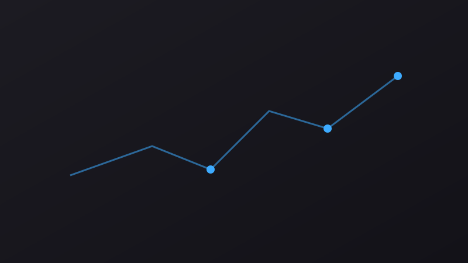
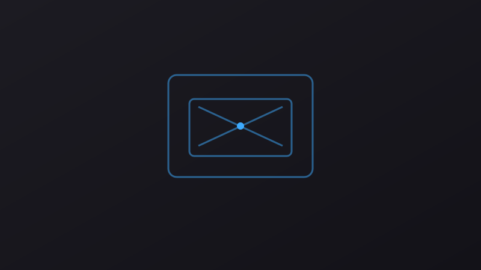
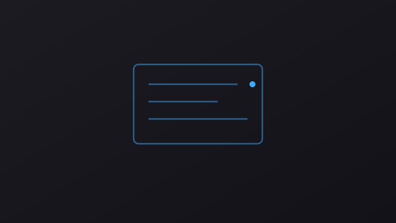
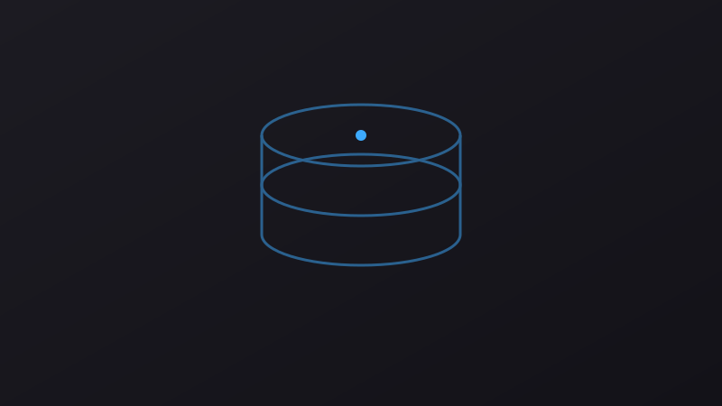

Portfolio
Automation suites, API test collections and the applications I use as QA targets.
-

Web App
FinanceHUB
Full-stack finance app (React/Node/SQL) used as my QA target project. Test automation in progress.
-

QA Automation
Cypress + Docker
E2E scenarios with page objects, Faker.js test data, Dockerized execution.
-

API Testing
Django REST API
REST API validation with Postman collections and Swagger contract checks.
-

Web App
Star Wars Database
Web app with SQL-backed search used for data integrity testing practice.
Sample artifacts
Documentation samples showing how I plan, execute and report on testing work.
Test Plan, FinanceHUB
Illustrative ISTQB-style test plan using FinanceHUB as example context.
View →Live Test Plan & Bug RegistryLive
Real defects logged while building an E2E suite, updated on every CI run.
View →AI-Augmented QA WorkflowReal workflow
How I use AI coding agents in my QA practice, with a real example.
View →